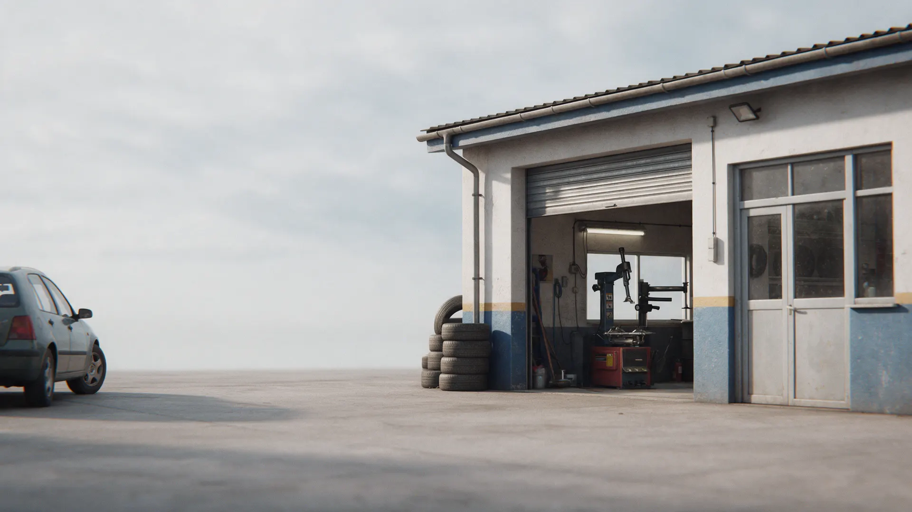
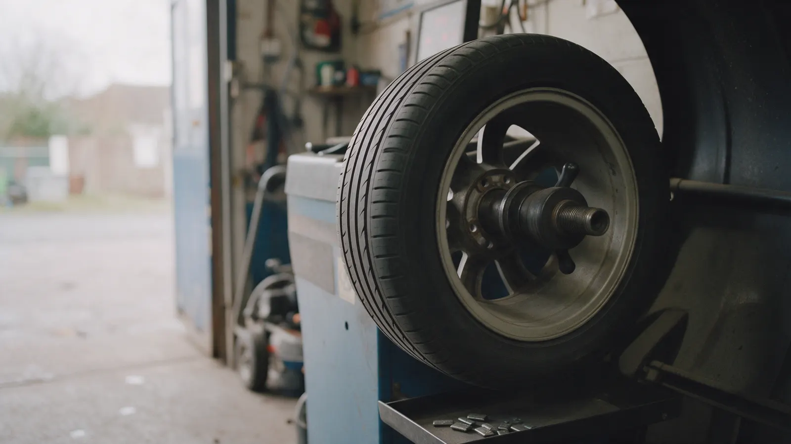
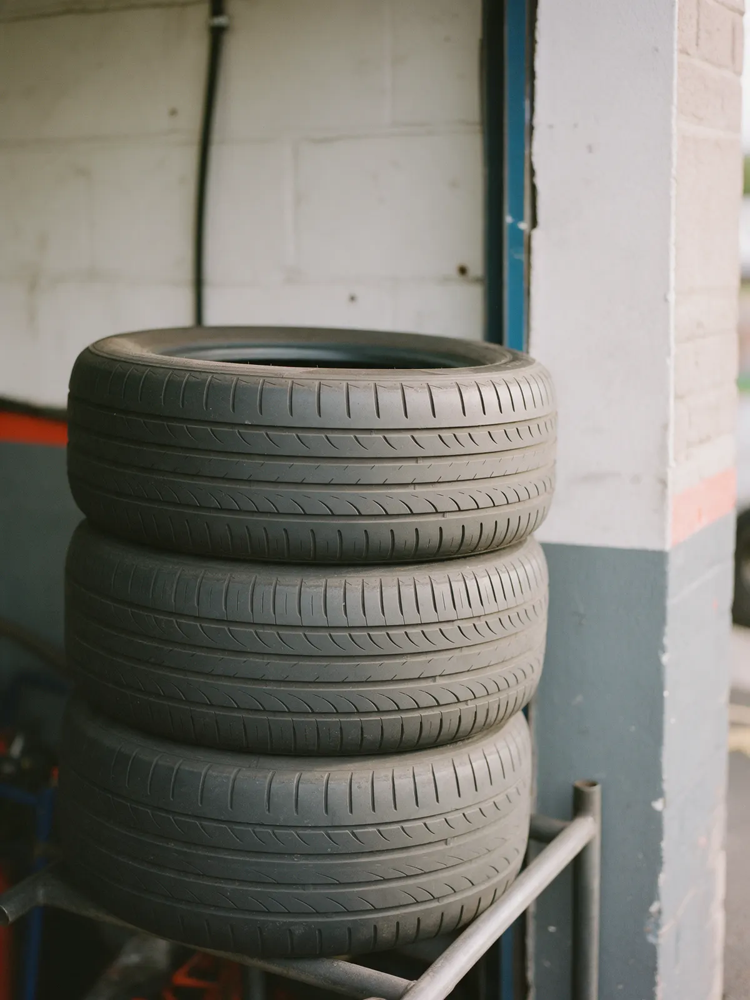
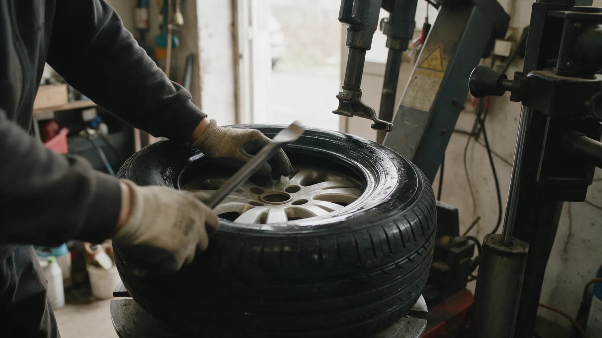

Шиномонтаж · Истра · Советская улица
Шиномонтаж в Истре на Советской, 46: запишитесь заранее
Замена шин, балансировка, ремонт колёс. Выберите услугу и время, затем позвоните: +7 (999) 993-72-02.
- Рейтинг 4,4 и 63 оценки на Яндекс.Картах
- Замена шин и балансировка, по отзывам клиентов
- «Как в пит-стоп заехал», пишет клиент в отзыве

Услуги
Прайса на карточке на Яндекс.Картах нет, поэтому цену уточняйте по телефону +7 (999) 993-72-02. Услуги – по отзывам клиентов.
Колёса и шины
- Шиномонтаж, замена шинуточнить
- Балансировкауточнить
- Ремонт проколауточнить
Список составлен по отзывам: на карточке указано только «Шиномонтаж».
Как проходит
- 01
Выбрали услугу и время
Форма на сайте, затем звонок на +7 (999) 993-72-02.
- 02
Приехали на Советскую, 46
Клиент в отзыве: «Хорошее место».
- 03
Колёса пошли в работу
Клиент в отзыве: «как в пит стоп заехал».
- 04
Забрали машину
Клиент в отзыве: «Всё отлично и быстро сделали».



Чем удобно
Быстро, втроём
Клиент в отзыве: «один снимает, другой балансирует, третий сразу одевает».
Шиномонтаж и балансировка
Замена шин, балансировка и ремонт колёс, по отзывам клиентов.
Оценки клиентов
4,4 из 5 по 63 оценкам на Яндекс.Картах, отзывы ниже.
Звонок перед выездом
Часы работы и цену лучше уточнить по телефону: +7 (999) 993-72-02.
Отзывы с Яндекс.Карт
«Очень быстро переобули, в "три руки" В троем один снимает, другой балансирует, третий сразу одевает, молодцы, как в пит стоп заехал»
PaveL Ale · 19 апреля 2023
«Всё отлично и быстро сделали, шиномонтаж рекомендую!»
Кирилл Голубков · 14 августа 2025
«Всё делают оперативно и качественно. Рекомендую»
Алик Алик · 31 марта 2025
Отзывы с карточки на Яндекс.Картах, без правок.
Частые вопросы
Вы работаете круглосуточно?
На карточке на Яндекс.Картах указано «Круглосуточно». Если едете ночью или рано утром, позвоните заранее: +7 (999) 993-72-02.
Как записаться?
Выберите услугу, день и время в форме на сайте и позвоните: +7 (999) 993-72-02.
Сколько стоит?
Прайса на карточке нет, цену уточняйте по телефону +7 (999) 993-72-02.
Какие услуги?
По отзывам клиентов: замена шин, балансировка, ремонт колёс. Полный список уточняйте по телефону.
Запишитесь на удобное время
- Адрес
- Советская улица, 46, Истра
- Часы
- Уточняйте по телефону
- Телефон
- +7 (999) 993-72-02